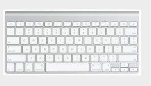

Introduction to Computers
James Brown
History of Computers
One of the earliest machines designed to assist people in calculations was the abacus which is still being used some 5000 years after its invention
In 1642 Blaise Pascal(a famouse french mathematician) invented an adding machine based on machinial gears in which numbers were represented by the cogs on the wheels.
Englishman, Charles Baddage, invented in the 1830's a "Difference Engine" made out of brass and pewter rods and gears, and also designed a futher device which he called an "Analytical engine".He design contained the five key characteristics of modern
computers :-
- 1.An input device
- 2.Storage for numbers waiting to be processed
- 3.A processor or number calculator
- 4.A unit to control the task and the sequence of its calculations
- 5.An output device
Augusta Ada Bryon (Later countess of Lovelace) was an associate of babbgage who has become known as the first computer programmer.
Computer Parts
Central Processing Unit
A central processing unit(CPU) is the electronic circuit within a computer that carries out the instructions of a computer program by performing arithmetic, logic, controlling, and input/ output (I/0) operations specified by the instructions.
The computer industry has used the term "central processing unit" at least since the early 1960s.[1]
Keyboard
A keyboard is a peripheral input device commonly used with computers and other electronic devices for typing text, entering commands, and performing various functions. It consists of alphanumeric keys,
function keys, modifier keys, arrow keys, and special keys arranged in a standardized layout such as QWERTY. Users interact with the keyboard by pressing keys, which generate electrical signals interpreted by the computer to produce corresponding
characters or trigger actions. Keyboards are essential tools for text input, navigation, and executing commands, making them integral to computing and communication tasks. A keyboard is a peripheral input device commonly used with computers and
other electronic devices for typing text, entering commands, and performing various functions. It consists of alphanumeric keys, function keys, modifier keys, arrow keys, and special keys arranged in a standardized layout such as QWERTY. Users
interact with the keyboard by pressing keys, which generate electrical signals interpreted by the computer to produce corresponding characters or trigger actions. Keyboards are essential tools for text input, navigation, and executing commands,
making them integral to computing and communication tasks.It consists of alphanumeric keys, function keys, modifier keys, arrow keys, and special keys arranged in a standardized layout such as QWERTY. Users interact with the keyboard by pressing
keys, which generate electrical signals interpreted by the computer to produce corresponding characters or trigger actions. Keyboards are essential tools for text input, navigation, and executing commands, making them integral to computing and
communication tasks.